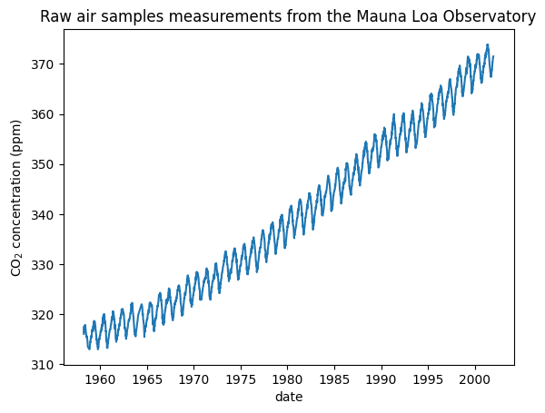
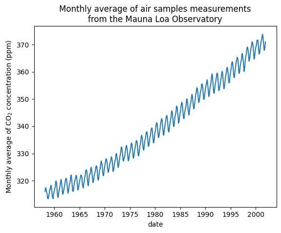

Forecasting of CO2 level on Mona Loa dataset using Gaussian process regression (GPR)
Taken from sklearn.
This example is based on Section 5.4.3 of “Gaussian Processes for Machine Learning” [1]_. It illustrates an example of complex kernel engineering and hyperparameter optimization using gradient ascent on the log-marginal-likelihood. The data consists of the monthly average atmospheric CO2 concentrations (in parts per million by volume (ppm)) collected at the Mauna Loa Observatory in Hawaii, between 1958 and 2001. The objective is to model the CO2 concentration as a function of the time \(t\) and extrapolate for years after 2001.
We will derive a dataset from the Mauna Loa Observatory that collected air samples. We are interested in estimating the concentration of CO2 and extrapolate it for further year. First, we load the original dataset available in OpenML as a pandas dataframe. This will be replaced with Polars once fetch_openml adds a native support for it.
from sklearn.datasets import fetch_openmlco2 = fetch_openml(data_id=41187, as_frame=True)co2.frame.head()
year
month
day
weight
flag
station
co2
0
1958
3
29
4
0
MLO
316.1
1
1958
4
5
6
0
MLO
317.3
2
1958
4
12
4
0
MLO
317.6
3
1958
4
19
6
0
MLO
317.5
4
1958
4
26
2
0
MLO
316.4
First, we process the original dataframe to create a date column and select it along with the CO2 column.
We see that we get CO2 concentration for some days from March, 1958 to December, 2001. We can plot these raw information to have a better understanding.
import matplotlib.pyplot as pltplt.plot(co2_data["date"], co2_data["co2"])plt.xlabel("date")plt.ylabel("CO$_2$ concentration (ppm)")_ = plt.title("Raw air samples measurements from the Mauna Loa Observatory")

We will preprocess the dataset by taking a monthly average and drop month for which no measurements were collected. Such a processing will have an smoothing effect on the data.
co2_data = ( co2_data.sort(by="date") .group_by_dynamic("date", every="1mo") .agg(pl.col("co2").mean()) .drop_nulls())plt.plot(co2_data["date"], co2_data["co2"])plt.xlabel("date")plt.ylabel("Monthly average of CO$_2$ concentration (ppm)")_ = plt.title("Monthly average of air samples measurements\nfrom the Mauna Loa Observatory")

The idea in this example will be to predict the CO2 concentration in function of the date. We are as well interested in extrapolating for upcoming year after 2001.
As a first step, we will divide the data and the target to estimate. The data being a date, we will convert it into a numeric.
X = co2_data.select( pl.col("date").dt.year() + pl.col("date").dt.month() /12).to_numpy()y = co2_data["co2"].to_numpy()
Design the proper kernel
To design the kernel to use with our Gaussian process, we can make some assumption regarding the data at hand. We observe that they have several characteristics: we see a long term rising trend, a pronounced seasonal variation and some smaller irregularities. We can use different appropriate kernel that would capture these features.
First, the long term rising trend could be fitted using a radial basis function (RBF) kernel with a large length-scale parameter. The RBF kernel with a large length-scale enforces this component to be smooth. An trending increase is not enforced as to give a degree of freedom to our model. The specific length-scale and the amplitude are free hyperparameters.
from sklearn.gaussian_process.kernels import RBFlong_term_trend_kernel =50.0**2* RBF(length_scale=50.0)
The seasonal variation is explained by the periodic exponential sine squared kernel with a fixed periodicity of 1 year. The length-scale of this periodic component, controlling its smoothness, is a free parameter. In order to allow decaying away from exact periodicity, the product with an RBF kernel is taken. The length-scale of this RBF component controls the decay time and is a further free parameter. This type of kernel is also known as locally periodic kernel.
from sklearn.gaussian_process.kernels import ExpSineSquaredseasonal_kernel = (2.0**2* RBF(length_scale=100.0)* ExpSineSquared(length_scale=1.0, periodicity=1.0, periodicity_bounds="fixed"))
The small irregularities are to be explained by a rational quadratic kernel component, whose length-scale and alpha parameter, which quantifies the diffuseness of the length-scales, are to be determined. A rational quadratic kernel is equivalent to an RBF kernel with several length-scale and will better accommodate the different irregularities.
from sklearn.gaussian_process.kernels import RationalQuadraticirregularities_kernel =0.5**2* RationalQuadratic(length_scale=1.0, alpha=1.0)
Finally, the noise in the dataset can be accounted with a kernel consisting of an RBF kernel contribution, which shall explain the correlated noise components such as local weather phenomena, and a white kernel contribution for the white noise. The relative amplitudes and the RBF’s length scale are further free parameters.
Now, we are ready to use a Gaussian process regressor and fit the available data. To follow the example from the literature, we will subtract the mean from the target. We could have used normalize_y=True. However, doing so would have also scaled the target (dividing y by its standard deviation). Thus, the hyperparameters of the different kernel would have had different meaning since they would not have been expressed in ppm.
from sklearn.gaussian_process import GaussianProcessRegressory_mean = y.mean()gaussian_process = GaussianProcessRegressor(kernel=co2_kernel, normalize_y=False)gaussian_process.fit(X, y - y_mean)
In a Jupyter environment, please rerun this cell to show the HTML representation or trust the notebook. On GitHub, the HTML representation is unable to render, please try loading this page with nbviewer.org.
plt.plot(X, y, color="black", linestyle="dashed", label="Measurements")plt.plot(X_test, mean_y_pred, color="tab:blue", alpha=0.4, label="Gaussian process")plt.fill_between( X_test.ravel(), mean_y_pred - std_y_pred, mean_y_pred + std_y_pred, color="tab:blue", alpha=0.2,)plt.legend()plt.xlabel("Year")plt.ylabel("Monthly average of CO$_2$ concentration (ppm)")_ = plt.title("Monthly average of air samples measurements\nfrom the Mauna Loa Observatory")
Our fitted model is capable to fit previous data properly and extrapolate to future year with confidence.
Interpretation of kernel hyperparameters
Now, we can have a look at the hyperparameters of the kernel.
Thus, most of the target signal, with the mean subtracted, is explained by a long-term rising trend for ~45 ppm and a length-scale of ~52 years. The periodic component has an amplitude of ~2.6ppm, a decay time of ~90 years and a length-scale of ~1.5. The long decay time indicates that we have a component very close to a seasonal periodicity. The correlated noise has an amplitude of ~0.2 ppm with a length scale of ~0.12 years and a white-noise contribution of ~0.04 ppm. Thus, the overall noise level is very small, indicating that the data can be very well explained by the model.